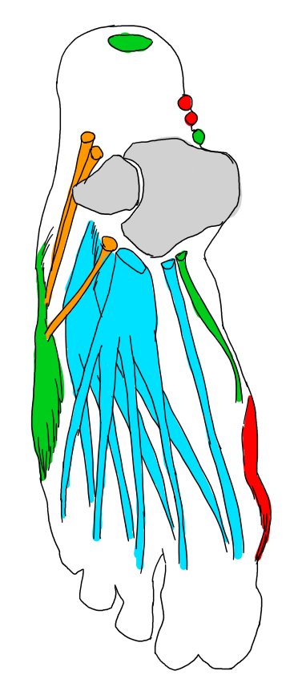

筋肉をグループ分けして覚える（脚）
脚は膝を境に2つに区切って考えます。そして腕と同様に右脚について考えるが、今度は反時計回りに筋肉を並べて考えます。その方が覚えやすいから。また、脚における伸筋群と屈筋群は、脚が前方に引くものを伸筋、後方に引くものを屈筋として考えています。
脚の筋肉の構造はどことなく腕の筋肉と対応しているように思えます。実際は全然違う機能ですが、同じ四肢の仲間として捉えると暗記するのに便利な解釈が得られるかもしれません。それにしても、膝周りの筋肉の付き方は非常に複雑で、正確に凹凸を描こうとするとかなり難しくなります。じっくり研究してなるべく早めに自分なりの記号化を試みるべきです。

出典 やさしい人物画／ルーミス
| 体の部位 |
グループ名 |
筋肉の名称 |
役割 |
| 脚（大腿） |
尻・外側の筋群 |
大殿筋（だいでんきん） |
脚を後ろに引く。脚を内転、外旋させる。 |
| 中殿筋（ちゅうでんきん） |
脚を外転させる。 |
| 大腿筋膜張筋（だいたいきんまくちょうきん） |
腿を曲げる。脚を外転、内旋させる。 |
| 腸脛靭帯（ちょうけいじんたい） |
大腿の外側面を包み込む。 |
| リッチャー靭帯 |
大腿部を横切る。 |
| 伸筋群 |
外側広筋（がいそくこうきん） |
脚を伸ばす。 |
| 大腿直筋（だいたいちょくきん） |
脚を伸ばす。太ももを伸ばす。脚を外旋させる。スクワット運動ではよく働く。 |
| 内側広筋（ないそくこうきん） |
脚を伸ばす。 |
| 境目 |
縫工筋（ほうこうきん） |
大腿を外転、曲げ、外旋させる。下腿を曲げる。大腿を斜めに横切る。 |
| 内転筋群 |
腸骨筋（ちょうこつきん） |
あまり気にしなくても良い。 |
| 恥骨筋（ちこつきん） |
大腿を内転、曲げ、外旋させる。 |
| 大内転筋（だいないてんきん） |
大腿を内転させる。大腿を曲げる。 |
| 長内転筋（ちょうないてんきん） |
大腿を内転、曲げる。 |
| 境目 |
薄筋（はくきん） |
大腿を内転、曲げる。下腿を曲げ、内旋させる。脚を正面から見ると最も内側に見える。 |
| 屈筋群 |
半膜様筋（はんまくようきん） |
大腿を伸ばす。下腿を曲げる。 |
| 半腱様筋（はんけんようきん） |
大腿を伸ばし、内転、内旋させる。下腿を曲げ、内旋させる。 |
| 大腿二頭筋（だいたいにとうきん） |
大腿を後方に引き、外転、外旋させる。 |
| 膝 |
膝蓋靭帯 |
膝の皿を固定する。 |
| 脛 |
前脛骨筋（ぜんけいこつきん） |
足首を反らせる。足首を内転、内反させる。内反とは足首が内側にグニャっと捻られること。 |
| 後脛骨筋（こうけいこつきん） |
足首を内転、内反、曲げる。 |
| 屈筋群 |
長指屈筋（ちょうしくっきん） |
足首を反らせる。母指以外を反らせる。 |
| 長母指屈筋（ちょうぼしくっきん） |
足首を反らせ内転させる。母指を反らせる。 |
| ふくらはぎ |
ヒラメ筋 |
足首を曲げ、内転、内反させる。 |
| 腓骨筋（ひこつきん） |
足首を曲げ、内転、内反させる。 |
| かかと |
アキレス腱 |
足首を反らせる。腓骨筋シリーズを結束してかかとに付く太い靭帯。 |
| ふくらはぎ |
長腓骨筋（ちょうひこつきん） |
足首と母指を曲げる。足首を内反させる。 |
| 短腓骨筋（たんひこつきん） |
足首を曲げ、内転させる。 |
| 第三腓骨筋（だいさんひこつきん） |
足首を反らせる。母指以外を反らせる。 |
| 伸筋群 |
長指伸筋（ちょうししんきん） |
母指以外を根元から曲げる。足首を曲げる。 |
| 長母指伸筋（ちょうぼししんきん） |
母指を曲げる。足首を内転させる。 |
筋肉をグループ分けして覚える（足）
足の筋肉はあまり意識しなくても良いかも知れません。足は筋肉より骨格を覚える方が有効だと思います。ただ、足の輪郭を生々しい曲線で描いた方がセクシーになるのは間違いありません。

| 体の部位 |
グループ名 |
筋肉の名称 |
役割 |
| 足 |
小指側 |
小指外転筋（しょうしがいてんきん） |
小指を外転。小指を根元から曲げる。脚の外側輪郭を作る。 |
| 伸筋群 |
短指伸筋（たんししんきん） |
母指以外を伸ばす。脚の甲で3つに分かれて各指へ伸びる。 |
| 短母指伸筋（たんぼししんきん） |
母指を伸ばす。母指を内側に引きつける。母指の甲に伸びる。 |
| 屈筋群 |
短母指屈筋（たんぼしくっきん） |
母指を曲げる。 |
| 母指側 |
母指外転筋（ぼしがいてんきん） |
母指を外転する。土踏まずに収まるように付く。 |